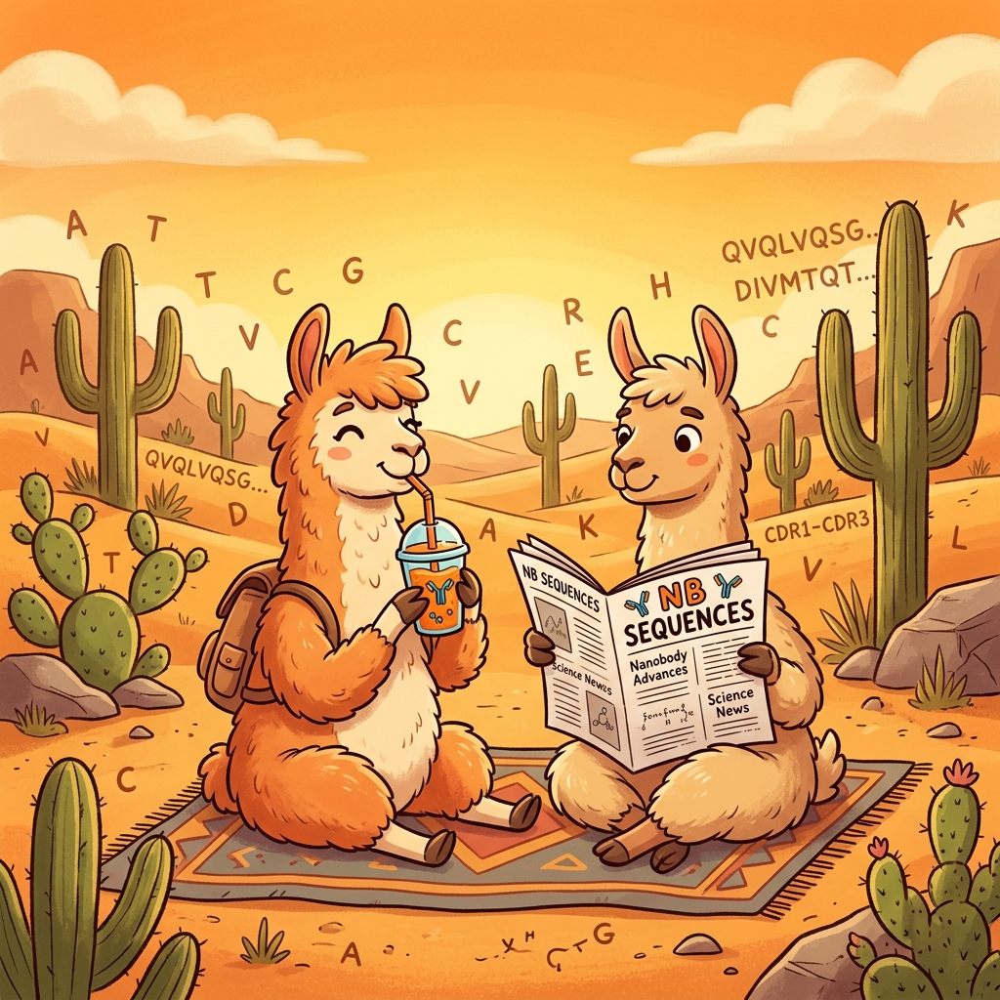

Overview
Four-day intensive training for early-stage researchers:
- When: 22. - 26. September 2025
- Where: University of Nova Gorica, Gorica, Slovenia (campus Rožna Dolina: map)
Keynote Speaker I: Prof. Dr. San Hadži, University of Ljubljana
Keynote Speaker II: Eva Smorodina, University of Oslo
This workshop is tailored for PhD students and early-career scientists eager to learn how to discover and engineer nanobodies — single-domain antibody fragments derived from camelid heavy-chain antibodies.
🔬 What You'll Learn
- How nanobody libraries are constructed, characterized, and screened
- Computational workflows to model, rank, or design nanobody candidates
- Hands-on training with phage display and wet-lab selection of antigen binders
🎯 Who Should Apply?
This workshop is open to PhD students with a basic background in biochemistry, molecular biology or related fields. It's ideal for researchers ready to integrate nanobody discovery into their work—computationally, experimentally or both. We will select participants based on their submitted abstract and motivation letter. To encourage learning from each other, all accepted participants are expected to deliver a 10-minute short presentation in the daily PhD2PhD sessions. Successful applicants will be notified and asked to pay a €300 registration fee (see FAQ for what is included).
🧠 PhD2PhD Session
Each registered participant presents either their current PhD project as it relates to nanobody research or a method/idea they plan to adopt. Talks are strictly 10 minutes, followed by a moderated discussion with peers and lecturers. Participation in these sessions is a requirement of registration.
🤝 Collaboration & Networking
The program includes informal discussion rounds, dedicated networking events, and social activities designed to foster connections and future collaborations.
Chairpersons
Klara Kropivsek
Ario de Marco
Marco Orlando
Sara Fortuna
Miguel A. Soler
Matteo De March
Barbora Kalouskova
Scientific Programme
ℹ The Nanobodies Workshop programme is now available for download. Our keynote speaker will be announced shortly. Please note that minor changes may still occur.
Here we introduce the core principles of VHH library construction and display. Participants compare immune, naïve/pre-immune and synthetic library formats. They explore methods for generating diversity such as PCR amplification and CDR randomisation. The session also covers quality metrics—library size, complexity and error rates—and presents an overview of phage, yeast and ribosome display workflows.
These sessions introduce core computational workflows for nanobody discovery, beginning with repertoire profiling and homology modelling to generate initial VHH structures and assess binding via virtual panning and docking. It then progresses to de novo design strategies, showcasing machine-learning and mutational-scanning approaches for proposing novel CDR variants with enhanced stability and affinity.
These sessions focus on hands-on selection techniques for recovering antigen-specific VHHs. Participants run phage-display panning rounds, learn to adjust washing stringencies and elution methods, and compare solid-phase versus live-cell panning protocols. The session emphasises optimization at each round to maximise binder enrichment.
This session focuses on computational approaches for predicting and improving nanobody biophysical properties. Beginning with homology modelling, molecular docking and molecular dynamics, it explores how these methods can assess stability, affinity and aggregation propensity of VHHs.
Here we address the role of nanobodies in structural biology and advanced microscopy. The session begins by examining how VHHs act as crystallization chaperones and cryo-EM stabilizers, reducing conformational heterogeneity, stabilizing transient protein states and serving as fiducial markers to improve particle alignment and orientation diversity.
Each evening, early-stage researchers have the opportunity to present a concise overview of their PhD projects or novel methodological concepts in ten minutes, followed by a moderated discussion. This sessions are designed to encourage peer feedback, collaborative problem-solving and the exchange of practical insights.
Plenary keynote addresses broad perspectives on the current research landscape and future directions of nanobody science. More information to follow.
Programme Contributions
9. Keynote Lecture I: Prof. San Hadži
👤 Prof. San Hadži (Faculty of Chemistry and Chemical Technology, University of Ljubljana)
🕒 22/09/25, 16:00
Lecture
Pareto trade-offs in nanobody binding affinity and its correlation with the geometrical space
3. Characteristics of Nanobody Libraries
👤 Prof. Ario de Marco (University of Nova Gorica, Slovenia)
🕒 23/09/25, 09:00
Lecture
This introductory session provides a foundational overview of nanobody (VHH) libraries. Participants will learn the key differences between immune libraries, native/pre-immune libraries, and synthetic libraries.
4. Nanobody Isolation In Silico From Pre-Immune Libraries
👤 Klara Kropivsek (University of Nova Gorica)
🕒 23/09/25, 11:00
Lecture
Virtual screening and docking-based identification of VHH candidates directly from NGS-sequenced naive repertoires.
Evening Activities
We'll share a full schedule soon, but you can already look forward to relaxed after-hours gatherings designed to bring everyone together. Test your wits in a friendly pub quiz, enjoy a conference dinner following one of the keynote talks, and join us for an additional social outing—whether it's sampling local flavours or discovering a regional landmark—to round off each day with good food and conversation and building new connections.
FAQs
1. Is the workshop free?
No. Selected participants pay a
€300 registration fee, which covers:
- Accommodation at the Garage Hostel (see Q2)
- All meals (lunches, coffee breaks) and social events
- Wet-lab consumables and materials
Note: Transport costs are not covered, except for transfers we organize during the workshop.
2. What accommodation is provided?
We've reserved rooms at Garage Hostel, Solkan. Public transport is free for all workshop attendees and stops directly in front of the hostel. There's also a bike-sharing station nearby.
3. Can I earn ECTS credits?
We do not directly award ECTS credits. However, we will issue an official Certificate of Attendance indicating the workshop's workload and learning outcomes.
4. Is the workshop open to international applicants?
Yes, researchers from any country are welcome to apply. We're happy to provide invitation letters and supporting documents to help with your visa application.
5. What food will be served?
We cater to all dietary needs—vegetarian, vegan, gluten-free, halal, etc. When you register, you'll be asked to specify any dietary restrictions or allergies.
8. What is the cancellation policy?
Free cancellation up to 1.9.2025. No refunds for cancellations made after 1.9.2025.
About Us
About the Organisers
The Nanobody Workshop is jointly organised by members of the Laboratory of Environmental and Life Sciences at the University of Nova Gorica and international collaborators. We are grateful for the support of everyone who helped shape the programme and make this event possible.
Scientific Committee
Chair: Dr. Klara Kropivšek, Prof. Ario de Marco
Members: Dr. Marco Orlando, Dr. Claudia d'Ercole, Urša Štrancar, Lucia Cikatricisova, Mirna Nakić, Xinyu Hu, Dr. Miguel A. Soler, Dr. Sara Fortuna, Dr. Matteo De March, Dr. Barbora Kalousková
Organising Committee
Dr. Klara Kropivšek, Prof. Ario de Marco, Dr. Claudia D'Ercole, Dr. Petra Raspor, Prof. Ian R. White, Nadja Lovec Santinello, Prof. Miha Pavšič (Instruct-ERIC Slovenia), PhD students of the LELS group
We also warmly acknowledge the support of the broader LELS team for their help and encouragement throughout the planning process.
About the Research
The Ario de Marco group specialises in scalable nanobody production, focusing on efficient microbial expression systems and robust purification protocols. They have developed and refined phage display selection strategies to isolate high-affinity binders, often integrating deep sequencing to monitor selection dynamics and improve target coverage.
Support and Funding
Host Institution: University of Nova Gorica – Laboratory of Environmental and Life Sciences (LELS)
Funding: Instruct ERIC Slovenia, SMASH (Marie Skłodowska-Curie Actions)